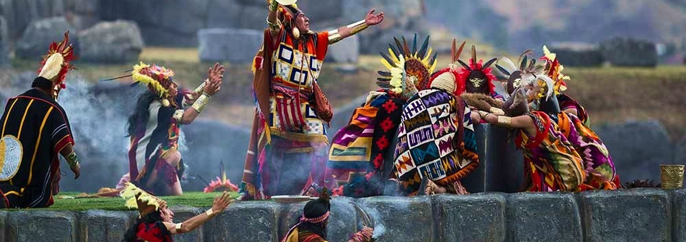
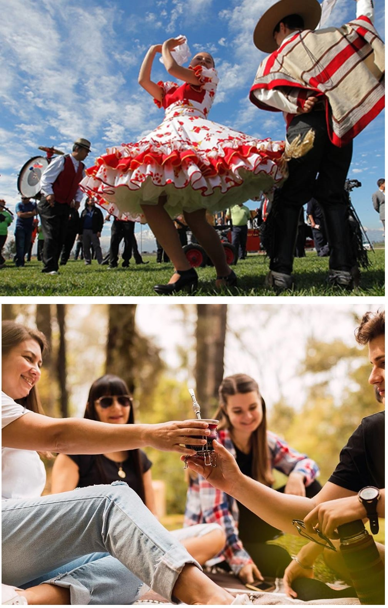

Continentul American este vast și divers, cu tradiții și obiceiuri unice care reflectă bogata moștenire culturală a regiunii. De la America de Nord la America de Sud, fiecare colț al acestui continent are propriile sale practici culturale care au fost păstrate și transmise de-a lungul generațiilor.

În Statele Unite, una dintre cele mai importante tradiții este Ziua Recunoștinței, sărbătorită în ultima joi din noiembrie.
Această zi comemorează prima recoltă a pelerinilor în 1621 și este marcată printr-o masă festivă la care se servesc curcan,
piure de cartofi, sos de merișoare și plăcintă de dovleac. Este o ocazie pentru familii și prieteni să se reunească și să-și
exprime recunoștința pentru binecuvântările din viața lor.
În Mexic, Ziua Morților (Día de los Muertos) este o sărbătoare vibrantă care se desfășoară pe 1 și 2 noiembrie. Aceasta combină
tradițiile indigene cu influențele catolice și este dedicată comemorării celor decedați. Familiile construiesc altare colorate
(ofrendas) decorate cu flori de cempasúchil, lumânări și mâncare preferată a celor decedați, creând o atmosferă de celebrare a
vieții și a memoriei.
În Brazilia, Carnavalul de la Rio de Janeiro este unul dintre cele mai mari și cunoscute festivaluri din lume. Această celebrare
de o săptămână are loc înainte de Postul Paștelui și implică parade spectaculoase, dansatori de samba în costume elaborate și muzică
vibrantă. Carnavalul este o explozie de bucurie și creativitate, oferind o evadare temporară din viața de zi cu zi și o oportunitate
de a se conecta prin muzică și dans.


În Canada, tradiția de a celebra Ziua Națională a Canadei pe 1 iulie este un moment important de unitate națională. Această zi
marchează aniversarea confederației canadiene din 1867 și este sărbătorită cu parade, focuri de artificii și evenimente comunitare.
Este o zi în care canadienii își exprimă mândria națională și recunosc diversitatea și moștenirea multiculturală a țării.
În Peru, festivalul Inti Raymi, sau Festivalul Soarelui, este o sărbătoare tradițională incașă care are loc pe 24 iunie. Această celebrare
onorează zeul soarelui, Inti, și marchează solstițiul de iarnă în emisfera sudică. Evenimentul include procesiuni, dansuri tradiționale și
ritualuri sacre, având loc în special la Sacsayhuamán, lângă Cusco, fostul centru al Imperiului Incaș.
În Guatemala, festivalul La Quema del Diablo (Arderea Diavolului) are loc pe 7 decembrie. Oamenii își adună lucrurile vechi și inutile
și le ard într-un foc mare, simbolizând purificarea și alungarea spiritelor rele înainte de sărbătoarea Nașterii Domnului. Această tradiție
reprezintă o formă de curățenie spirituală și un nou început.
În Bolivia, festivalul Alasitas este dedicat zeului abundenței, Ekeko, și are loc pe 24 ianuarie. Oamenii cumpără replici miniaturale
ale obiectelor pe care le doresc (case, mașini, bani) și le oferă lui Ekeko cu speranța că zeul le va aduce bunăstare și prosperitate.
Acest festival reflectă credințele indigene și speranțele pentru un viitor mai bun.
În Chile, tradiția de a sărbători Fiestas Patrias pe 18 septembrie marchează Ziua Independenței țării. Această sărbătoare națională
include parade, dansuri tradiționale cum ar fi cueca, rodeo și grătare în aer liber (asados). Fiestas Patrias este un moment de celebrare
a identității naționale și a tradițiilor culturale chiliene.
În Argentina, tradiția de a bea mate este o practică socială și culturală importantă. Mate, un ceai din frunze de yerba mate, este
consumat într-un ritual de partajare între prieteni și familie. Acesta simbolizează ospitalitatea și prietenia și este adesea însoțit
de conversații lungi și plăcute.
În Cuba, tradiția de a sărbători Noche Buena pe 24 decembrie este un eveniment major de Crăciun. Familiile se reunesc pentru a savura o
masă festivă care include porc la rotisor (lechón asado), fasole neagră și orez (moros y cristianos) și alte delicii tradiționale. Noche
Buena este un moment de unitate familială și bucurie.

Tradițiile și obiceiurile din America reflectă o mare diversitate culturală și istorică, demonstrând modul în care fiecare comunitate își păstrează și celebrează identitatea și moștenirea. Aceste practici culturale aduc oamenii împreună, creând un sentiment de apartenență și continuitate în rândul generațiilor.